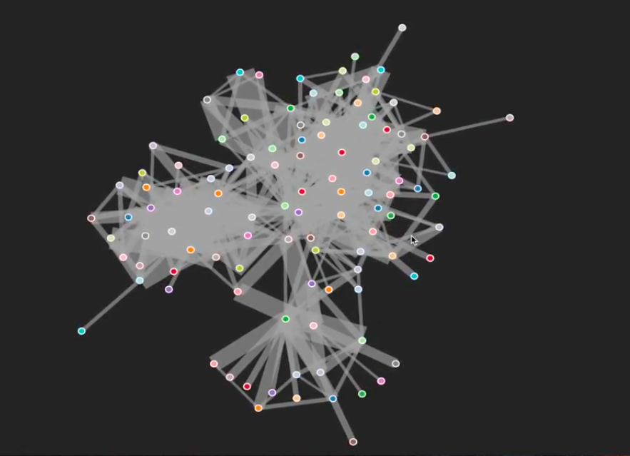

In the first of two videos, we spent some time getting data from an API using an HTTP request and in the second video we transformed that data. So, we can start using it for our visualization. Now, let's start getting into it taking a look at our code. We have the functions that we are looking at before. This is the loadData() function that we dealt with in the first two videos.
Now, we're going to spend some time to fill the createVisualization() function down here where all the actual visualization will be built.
Taking another look at the visualization view in our app views folder, we can see that we already imported the d3 library. So, because of that, we can start using d3 in our own visualization file, which has the createVisualization() method.
So, let's get right into it. There's a couple of steps we need to do: we need to create the physical simulation of the graph that d3 does for us and then we have to start adding elements to the website to our DOM. So, we'll start off with the first bit.
We need a couple of settings for our visualization. We're going just set a fixed height and width for it. I'm going to just use 800 pixels, you can use whatever fits your screen best and just play around with it a little bit. So that's two things we need straight away and then we also need our nodes and links that we got from the previous function and that we initially got from our API and then transformed. So, we'll create another variable and we call it force, because it's going to be a force directed graph layout and now we can start using d3 by just typing d3 and we want a layout and it should be a force layout. And now we'll use function chaining that d3 uses a lot to set some settings on this.
So, we're going to set the charge, which is basically the gravity settings and the gravity in this case should be minus 220. This is the force with which the nodes will repel each other. So, if you set this to a lower value or actually a higher value, say that's minus 10, the nodes would stay closer together and if it's something higher or more negative, like minus 220, in this case, they'll be further apart, because the links act like springs and the nodes are actually like magnets repelling each other. And then, there's also the link distance: this basically tells us how long our springs are going to be between those repelling magnets and now you need to set the dimensions. This actually takes an array of two numbers height and width and we could just write some numbers in here, but we already set them up there and it's always a good practice to keep settings like these that you might need in several places outside of the actual code right here and put them at the top or somewhere you can just change them in one place. It needs some more things; it needs the nodes and we already generated those in the previous video. So, we can just give them the nodes that are coming from up here. It also need the links and it is the same deal here. And then, finally, we have to start the simulation. This is enough to tell d3 to create a forced directed layout for us using the nodes and links provided and start a simulation.
So, we're now going to start using d3 to manipulate the DOM by adding elements depending on that data. So, because it's going to be an SVG element, we're going to call the variable SVG. I'm going to use d3 select and this will allow us to select a DOM element; in this case, the root element, and because it has the ID root, it has the prefix of a hash tag (a pound symbol) and then we want to add a new element, which is an SVG element for our visualization. We're going to append an element of type SVG. It has several attributes. It has a width and again you can just use a variable and another attribute that's the height. If we now take a look at our site, reload the site (press the button). We have now added a new SVG element of our defined width and height.
Now, the next thing you need to do is to add a number of elements that represent a graph depending on our data and, in this case, we need a number of links and nodes. We want to define what a link should look like and for that, if you can remember our lecture, we're going to use the d3 way of adding data, which is by selecting all elements with the class link attached to them (which will be none at the beginning) and we're going to compare that to our data.
Our data, which is stored in the links variable will be compared with the elements that dont already have a representation in the page and for that we use the enter function. And for each one of those elements we want to append a new element to our graph and it's going to be an element of type line and that will already append a line.
Now, we already gave you a visualization.css file that has two simple classes; one for the style of the link and one for the style of the node and it just has the color for the stroke and a bit of opacity. And the node also has a color and again for the stroke and the settings for the width of the stroke to get a nice little wide stroke around it.

So, we're going to set this one as well. We're going to set any line element. We'll get a class attribute with a value link and that's going to be enough to define the link.
Now, we're going to do the same for the nodes variable node svg.selectAll elements with the class node attached to them. And compare them to the data and nodes. It needs to be a function, so they need the period infront of them, and then give me anything that is in the data, but not in the page and for any of those append a new element to our SVG graphics.
In this case, a circle element and this one will also get the attribute class with the value; this time it is going to be node. Realize that this function to be a class attribute is not just important for the style of the class, but also because we are selecting any node element here, so any element with the class node. So, it's not just for the styling the CSS, but it's also a label. Then, because, these nodes are circles and the circle is a defined SVG element that needs another attribute, and this attribute is the radius of the circle we want to have and this one is actually defined by the r attribute and r needs a number and that's going to be pixels. So, I can technically put 5 here, but, as we said before, that's maybe not the best practice. Instead, I'm going to pretend there's a new variable called nodeRadius and I'm going to go back up to my settings and actually create that variable nodeRadius and set it to 5. So, now, we defined the style and, in this case, also the radius for the nodes and we told d3 that we want a bunch of links for our links and a bunch of circles for our nodes.
Now, let's go back to our website, refresh the page, so the JavaScript gets reloaded and click the button again. As you can see, something has happened. If I take a look into the root element again, we now actually have added a bunch of lines and, further down, circles to our SVG visualization.
Now, if you look closely, you might be able to see there's like a little something on the top left of our screen and these are actually our nodes. So, this is like a quarter circle and it is because these are our circle elements, but all of them are positioned at position zero, which in the visualization world means the top-left corner of the screen. So, it's like the classic Cartesian coordinate system that you probably know from your Math classes. Except zero, zero is actually on the top left.
So, one more thing we need to do. Because in the beginning, we created our forced layout that is this bit here that tells d3 to take these nodes and links and start a forced layout simulation of the positions, and we told it for every link we want the line of every node. What we didn't do yet is actually connect those together, meaning we now need to tell d3 actually the position for these links and nodes should be whatever you are calculating over here. And in this case, we actually start looking into events.
So, what we're going to do, and we need to do this down here, because we're going to need the nodes and the link, so we need to do it after we define those, we're going to go back to our force simulation, which is stored in the force variable. force.on() and on is the JavaScript way of dealing with events. So, whenever a tick event is fired, I want the following function to be called, and tick is the event that gets called every step of the simulation of this force layout. So, whenever it's calculating new positions, this function will be called.
So, what we're going to do now, every time d3 calculates new position for nodes, we're going to start adding attributes to our nodes. So, in this node variable, we still have stored any element with class node and after calling this, there will be a class node element for any of our nodes in the data. So, what we're going to do now on every tick, we're going to update two attributes of our nodes and those two attributes are defining the position. So, the first one is cx at the position in the x-direction and it's going to be defined by a function and in this case, this gets a data point and that is d3 convention. This data point is actually going to be our node s calculated in the force layout up here.
So what's happening in this calculation is that we have our node element that you can remember from the lecture before and that one has a source and a target - in the case of the links and just the name in the case of the nodes. So, what we're going to do every time this function is called, we can access the node element used in our force layout using this d variable. So, what we're going to do is going to set the x position of our node to whatever d3 have calculated for the x-position in the graph simulation, in the physics simulation that calculates the position. So, with now doing this, we're going to connect the x position of the node on the screen to the x position to the node in the physics simulation and we're going to do the same thing for the y position, return this time dy. Let's try it and see if that works.
Aha! And now all the nodes get the position that d3 has calculated for them in our physics simulation.
Next thing we need to do is do the same thing for the links and let me just make that look a bit nicer. In the same tick event function, we're going to also do the same to our links, except this time, we need to define four different positions, because the link has a beginning and an end position and then there'll be a line between those.
So, I'm going to start off using x1 which is the x position of the beginning of the line and it's going to be the same thing function d and this time our link element has a source and the target and those get separate positions calculated by the physics simulation. So, we're going to say source.x, and then next one it's going to be the y position of the beginning of the line, and this one is going to be source.y, target is going to come next. Now, the third one is x2, x is position of the end of the line. This time, the target x position and, finally, the y2 attribute function d return the d.target y. Now, we set for each of the link elements, we set the x and y positions of the source of the link and the x and y position of the target of the link. So, after saving that file, gone back to our simulations, reload the page, hit the button, et voila!
We do have a nice graph with nodes and links in between them. Now, it doesn't quite look like our demo in the beginning yet, because that doesn't have any colors and also nothing is happening when I click on any of the nodes. So, there's going to be a couple of more things we're going to do just for fun.
So, we added some styling using the classes node and link in our visualization file over here, but all they define is a stroke and now we're going to try it and define the colors of the nodes depending on the name of the characters. And for colors d3 provides a number of functions. The first thing we need is a scale. We're going to define this one up here again just by going var color equals d3.scale.category20()
So, what this does is, it returns a scale of 20 different values, discrete values, and we're going to use those to select 20 different colors depending on the name of our characters. So, this returns a function, so we can now call this color function with any string and it will just return us a color.
So, going down to our node again and now we're going to call another function on this one, called style. And you want to fill the node with a certain value and this again takes the function and it gets the d element, which is the current data point or datum and we want to set the fill element of that current datum to whatever the color function gives us for the name and we know that our current data point has this names element, because we defined that in the last lecture that all the nodes are objects with this name attribute.
Click on back to the site, we're loading it again. Now, all the nodes have different colors depending on the name of the character and you can see that some of them appear multiple times like the red one for example here. That's because we have about around 100 characters, but only 20 different colors in our scale.

So, they're not all going to be the same, but if you really want to have unique ones, you can also write your own color function, for example, here, instead of using the d3 one. Just play around a bit if you like.
So, there are two more things that have been in the demo that we haven't done yet. So, one thing I'm going to do is I'm going to define the width of our links dynamically depending on the weight of the relationship object that we got returned from the API.

So, again, we're going to use the style function, but in this case I'm going to fill. It's actually going to be the stroke width so we're going to define the width of the line between two nodes. Again, function receives the current data point and then this gets called for any element that has the class link attached to it. So, this function returns. And we can just return the d.weight here because all of the link, all of the relationships that we got from the API actually have a weight attribute. Now, if you take a look at that.
Well, it doesn't really look too nice, because there's a big difference between some of the smaller ones and the bigger ones and some of them are quite large, so it becomes a bit ungainly. So, what I'm going to do is I'm actually going to use another built-in JavaScript function from the math library, which is the square root. So, I'm just going to square the weight and now it looks a lot nicer.
As you can see, the characters that are having more intensive relationships have now wider links between them than those that have like a less close relationship.
If you remember the demo I showed you in the beginning of this video and the in last few videos as well, we also can define an interactive behavior of the graph. There is a couple of things we can do. If you'd like to see some more advanced examples, go online and you can see things like dragging them around, so they respond nicely to input. For now, we're going to focus on making them clickable. For that, we are going to add two more event functions.
So, we're going to take a look at the node and this time you're gonna implement an event on the node itself. So, the node is a DOM element and as such it responds to click events, so if I click on it, it get registered by the browser and we'll fire this click event on this node element.

So, I can define what's going to happen whenever this click event is fired, and I'm going to use d3 again and what I'm going to do is I'm going to select this specific node using d3 and change some of its attributes. So, I'm going to do it d3.select and this time because this function is called on the node itself, I'm going to select this and now I can start transforming whichever node I or the user has clicked on. And what I'm going to do is, I'm going to set the attribute radius to 20. Actually, because, we already have our node radius, let's just set it to whatever the node radius was times 4. If I save that, go back, reload, run the visualization and I'll click on any of the links, they are four times the size then before.
Now, that's nice but looks a bit abrupt. One of the things that d3 is really good at is making transitions look smooth and nice. So, we're going to add a little bit more to this and then add a transition and this transition function needs to be called before the actual change of attributes.
So, I'm going to just tell it to transition and then I also need to define how long that transition period is going to be and that's in milliseconds and I'm going to make it nice and slow, so you can see it, so 750 milliseconds. So, save the file and go back and reload our graph again. If I now click any of the nodes, get it a little nice and slowly transition from one setting of radius size to the next.
And we can also just for the fun of it maybe add another transition. So, let's say you want to change the fill color and I'm just going to change to red so whenever I click on it, it will increase its radius by times 4 and it fill the color red. And you could take a look at the d3 documentation, there's a whole number of things you can do with this and it's a lot of fun to play around. So, just spend some time with it if you're interested.
Now, this is fine, but what if you want to go back. So there's a number of things we could do. We could for example start storing the previous size or color, you know node itself, and then on a different event go back to that. So, now we're going to keep it simple and just going to define another event on the nodes. A node on double-click I want something else to happen.
More specifically, again, I want to select the current node using d3 and again I'd like it to transition nicely to the same duration and I'm just going to return the attribute to its original radius, so node radius again, and I'm just gonna set the color to white to say okay I've been here before, this one has been clicked. So, now I can click it. It will get big and red on a double-click it will go back to white. So now, with a few simple steps and a few lines of code we've created a nice and interactive graph visualization using d3.
This is all we need to create this visualization: we have our forced layout physics simulation that calculates our node positions, we created a new SVG element on our DOM on the HTML page to actually populate with our visualization, we created a bunch of link and node elements in SVGs for lines and circles and then we connected the positions for the calculated positions of the physics simulation to our SVG elements on the page, and then also added some events for interactivity.